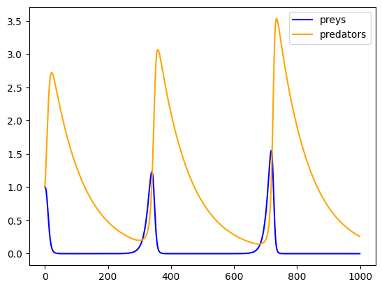
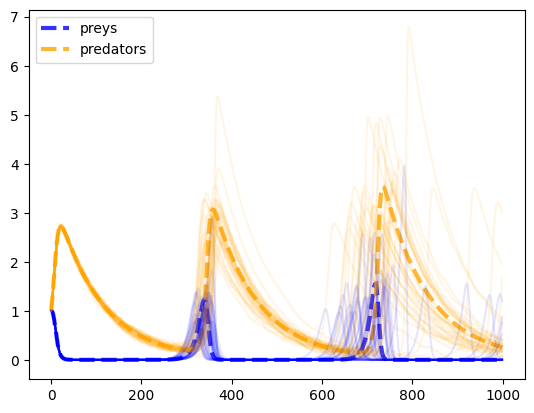

import numpy as np
import matplotlib.pyplot as plt3 Computational writing
In the following, we will enrich the scholarly writing experience with computations.
3.1 Basic example: predator-prey dynamics
Let’s assume we want to study predator-prey dynamics in ecology. The predator-prey equations are a famous model showing that species population sizes do not have to be stable, even in equilibrium. Instead, they can continuously oscillate.
Mathematically, we express the model as follows:
Let \(x_t \in \mathbb R\) be the number of prey and \(y_t \in\mathbb R\) the number of predators in the population at time step \(t\). They evolve according to
\[\begin{align} x_{t+1} - x_{t} =: \Delta x = \alpha x_t - \beta x_t y_t \\ y_{t+1} - y_{t} =: \Delta y = \gamma y_t x_t - \delta y_t \end{align}\]
where the parameter \(\alpha\) represents the preys’ birth rate, \(\beta\) the prey’s mortality rate, \(\gamma\) the predator efficiency, and \(\delta\) the predators’ death rate.
Right below the mathematical model, we define the computational model:
def predprey_model(prey_birth_rate,
prey_mortality,
predator_efficiency,
predator_death_rate,
initial_prey,
initial_predators,
time_length):
""" Discrete-time predator-prey model. """
x = -1 * np.ones(time_length)
y = -1 * np.ones(time_length)
x[0] = initial_prey
y[0] = initial_predators
for t in range(1, time_length):
x[t] = x[t-1] + prey_birth_rate * x[t-1]\
- prey_mortality * y[t-1]*x[t-1]
y[t] = y[t-1] + predator_efficiency * y[t-1]*x[t-1]\
- predator_death_rate * y[t-1]
return x, yWe test the model,
preys, predators = predprey_model(0.1, 0.1, 0.1, 0.01, 1.0, 1.0, 1000)and portray the model output, make the Figure referenceable in by using the Quarto comment commands
#| label: fig-modelrun
#| fig-cap: "An exemplary predator-prey model run"plt.plot(preys, label="preys", color='blue')
plt.plot(predators, label="predators", color='orange')
plt.legend();

Figure 3.1 shows an exemplary predator-prey model run.
Note
This basic form of computational writing is the most transparency, collaboration, and reproducibility friednly. This approach allows us to cleanly display our Jupyter notebooks in other places, such as GitHub, NBViewer, or Google Colab.
However, often model code and analysis are too complex to be presented in a single notebook. There a two ways to deal with this problem: Quarto embeds and reusing code written in a notebook with nbdev.
3.2 Quarto embeds
Quarto lets you embed the output of another document with the embed shortcode. To do this, simply provide the document path and block or cell identifier, e.g,
{{< embed HeavyComputations.ipynb#fig-scatter-plot >}}Figure 4.1 shows a heavy scatter plot.
Note
Quarto embeds can be a great and easy way to structure a project without using an additional tool. However, the Quarto embeds won’t show in any other Jupyter environment.
Another strategy is to reuse code written in a notebook with nbdev.
3.3 Code reuse with nbdev
This part makes use of the excellent nbdev Python package 1. nbdev provides a ready-to-use ecosystem for creating software packages with Jupyter Notebooks, i.e., writing, testing, documenting, and distributing. We use it, for example, here 2. For our computational writing experience, however, we resort to individual components of nbdev.
See nbdev’s getting-started guide 3 for how to install it.
One of the key features of nbdev is that it lets you export specific Jupyter Notebook cells to a plain Python file. These Python files can then be easily imported into other Jupyter Notebooks.
You only have to specify the name of Python module file to export to via
#|default_exp <name>Then, you can a export a Juptyer Notebook cell by simply prepending
#|exportto it.
Important
To avoid a small conflict between Quarto and nbdev, make sure to add a space, , before the nbdev directives #|default_exp <name> and #|export. See here for details.
… Shows an example
from _code.HeavyComputations import noisy_predprey_modelnp.random.seed(42)
preys, predators = noisy_predprey_model(0.1, 0.1, 0.1, 0.01, 1.0, 1.0, 1000, 0.0)
plt.plot(preys, lw=3, ls='--', label="preys", color='blue', alpha=0.8)
plt.plot(predators, lw=3, ls='--', label="predators", color='orange', alpha=0.8)
for _ in range(35):
preys, predators = noisy_predprey_model(0.1, 0.1, 0.1, 0.01, 1.0, 1.0, 1000, 0.025)
plt.plot(preys, color='blue', alpha=0.1)
plt.plot(predators, color='orange', alpha=0.1)
plt.legend(); 